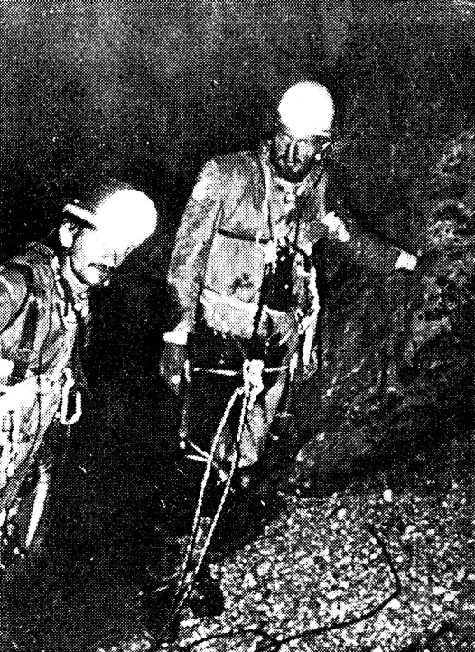

Jama pod Kamenitim vratima
Jama pod Kamenitim vratima istražena 1980. godine. Iako je poznato da velike objekte treba istraživati na ekspedicijski način, međutim, zbog moderne opreme i uigrane ekipe odlučeno je da se primijeni jurišni način…

ABSTRACT
In the summer 1980. the Cave under the Stone gate was explored in just a few days, was the second deepest in Croatia at the time of exploration, and one of the most impressive. Exploration was carried out by the members of Speleological section Velebit. The cave is located on the Biokovo Mountain which rises steeply above the Makarska riviera, its entry is at the height of 1350 m above the sea— level. It was formed from numerous fissures and is marked by large vertical walls. After the initial drop of 65 m, there is a completely vertical one 230 m, which ending a ledge, 15 m long and 4 m wide. This is followed by two smaller drops and then second vertical wall 170 m long which ends on the bottom of the cave at the depth —520 m. After the first drop there is a little water flow, which can be avoided by the use of a spit. In spring, when the snow is melting, the entire bottom (25 m in diameter) may become a lake The cave was explored in two attempts with a one day break in between. The first exploration lasted 16 hours, but then speleologists had to return to the surface from the depth of 420 m because they lacked equipment. After a rest of 24 hours, the bottom was reached in the second attempt which lasted 33 hours, the was reached in the second attempt which lasted 33 hours, 16 speleologists took part in the exploration of which two got to the bottom. The speleologists kept in touch by the use of Walkie-talkie stations, connected by a single telephone cable.
Jama pod Kamenitim vratima istražena je u okviru speleološkog logora pod pokroviteljstvom Komisije za speleologiju HPS, koji je održan od 26. srpnja do 3. kolovoza 1980. godine. U radu samog logora, na kojem je, pored Jame pod Kamenitim vratima istraženo još nekoliko jama, sudjelovali su speleolozi iz sedam odsjeka u Hrvatskoj.
Interesantno je podsjetiti se na način istraživanja i neke detalje tog zanimljivog pothvata, koji je jedinstven u Hrvatskoj po načinu na koji je savladan ovako impresivan objekt. Za svega nekoliko dana otkrivena je i istražena jedna od najdubljih i najimpozantnijih jama u Hrvatskoj. U dva pokušaja, s međusobnim razmakom od jednog dana, istražena je i topografski snimljena druga jama po dubini u Hrvatskoj, svega četrnaest metara plića od 534 m dubokog Ponora na Bunovcu. Za slične pothvate bilo je nekoć potrebno i po nekoliko mjeseci planiranja i pripremanja.
O smještaju i postojanju jame nije bilo nikakvih podataka prije samog istraživanja. Jama je otkrivena pretraživanjem terena. Cijelo to područje je kamenjar prepun vrtača obraslih bukovom šumom i šikarom.
Prva je pronašla jamu Koraljka Fabinc kasno poslijepodne u utorak 29. VII. 1980. godine. Isti dan do prve police na 65-tom metru spustio se Erhardt. Zbog toga što je već bilo kasno, a jama je procijenjena na 250 do 300 m, istraživanje je prekinuto, a ekipa se vratila u logor smješten uz lugarnicu udaljenu oko 25 minuta od objekta.
Dotadašnja iskustva su pokazala da velike objekte treba istraživati na ekspedicijski način, međutim, zbog moderne opreme i uigrane ekipe odlučeno je da se primijeni jurišni način istraživanja bez bivakiranja u podzemlju. Nastavak istraživanja isplaniran je tako da su formirane dvije ekipe: jurišna (tri člana) i transportna (četiri člana). Zamišljeno je da transportna i jurišna ekipa zajedno dopreme materijal do prve police (65 m), a da zatim jurišna ekipa pođe dalje. Drugi speleolozi će biti na površini i pomagati prilikom transporta i izvlačenja opreme. Plan je nešto malo izmijenjen stjecajem okolnosti, ali je istraživanje provedeno u osnovi onako kako je zamišljeno. Kako je tekla sama akcija najbolje je pratiti po dnevniku istraživanja.
[caption id="attachment_3809" align="alignnone" width="526"] Đuro Sekelj i Robert Erhardt na -345 m. Snimio: D. Petricioli.[/caption]30. srpnja — Pripremljen je materijal i osobna oprema. Ekipa odlazi do jame i nosi opremu. Oko 10 sati po već postavljenom užetu do prve police se spuštaju Sekelj, Rendić, Supičić, Fabinc i Erhardt i transportiraju opremu. Puharić i I. Nemeš će doći kasnije. Preko jedne stijene napravljeno je sidrište. Jurišna ekipa koju sačinjavaju Sekelj i Erhardt dolazi do 290 m. Uspostavljena je veza preko voki-tokija i jednožilnog kabla razvučenog između police i transportne ekipe na ulaznom dijelu, koja je u jednom trenutku bila prekinuta zbog kidanja kabla, ali je poslije opet uspostavljena. Polica je prostrana i velika (15X4 m), ali je jako vlažna. Ekipa prekida vezu i nastavlja napredovanje. Slijedi spuštanje niz dva manja skoka uz obilno zalijevanje slapa. Na dubini od 420 m istraživanje je prekinuto zbog nedostatka užadi. Ekipa se vraća do 290 m i uspostavlja vezu sa površinom. Oprema ostaje u jami, a jurišna ekipa izlazi na površinu oko 0,30 sati, nakon 16 sati provedenih u jami. Povratak u logor.
31. srpnja — Dan odmora. Planiranje nastavka istraživanja. Pripremanje dodatne opreme. Prekinuta su istraživanja svih drugih Objekata na logoru. 1. kolovoza — U rano jutro kompletna ekipa odlazi na jamu. Slijedi ponovo pripremanje ekipe i planiranje istraživanja. Plan je slijedeći: do 65-tog metra dolazi prva transportna ekipa koja će biti na vezi i koordinirati transport i rad na površini. Druga transportna ekipa doći će do 290-tog m, a jurišna ekipa ide dalje.
Oko 10 sati svi se spuštaju do prve police Gabrić je vođa prve transportne ekipe koja ostaje na toj polici. Do 290-tog m se spuštaju Sekelj, Petricioli, Supičić i Erhardt i transportiraju novi materijal. Drugu transportnu ekipu sačinjavaju Petricioli i Supičić i oni ostaju na polici i održavaju vezu sa površinom. Jurišna ekipa (Sekelj i Erhardt) nastavlja dalje. Spušta se na malu policu na 350-tom m, ali zapinje uže koje transportiraju za sobom. Dolazi Petricioli i oslobađa uže. Slijedeće sidrište je na malom izbočenju na 447 m dubine. Tu je ujedno i kraj užeta. Sa slijedećim uzetom jurišna ekipa doseže dno jame —520 metara nešto prije 22 sata. Nakon zadržavanja od 1 sat, oko 23 sata ekipa počinje izlazak iz jame. Predstoji mukotrpno izvlačenje opreme. Prvo izvlače užad do 350-tog m. Zatim javljaju drugoj transportnoj ekipi o rezultatu istraživanja, a ovi prosljeđuju vijest na površinu.
2. kolovoza — Oko 6 sati u jutro sastaju se jurišna i druga transportna ekipa na 290-tom metru. Izvlače opremu na policu i u 7 sati Sekelj kreće prema prvoj polici i površini. Zbog velike duljine skoka, umora i neispavanosti, izlazak ide vrlo sporo. Nakon gotovo 7 sati čekanja na drugoj polici posljednji kreće prema površini Erhardt i izlazi iz jame, oko 16 sati, nakon 32 sata provedena u podzemlju. Transportna ekipa izvlači užad na prvu policu, a nakon toga svi sudjeluju u izvlačenju opreme na površinu. Posljednji speleolozi iz transportne ekipe izlaze pred večer i time je uspješno okončano istraživanje.
[caption id="attachment_3811" align="alignnone" width="531"] U jami pod Kamenitim vratima. Snimio: Ž. Supičić[/caption]U istraživanju Jame pod Kamenitim vratima sudjelovalo je 16 speleologa od kojih 4 ženska člana. U jamu se spustilo 12 speleologa i to: Đuro Sekelj i Robert Erhardt (SO PDS "Velebit") do dna —520 m Donat Petricioli (SO PDS "Velebit") do —350 m, Žarko Supičić (SO PD "Sutjeska") do —290 m, do —65 m došli su Koraljka Fabinc, Majda Nemeš, Ivica Nemeš, Nikica Rendić, Boris Ziljak (svi SO PDS "Velebit"), Boris Mahovac (SO PD »Sutjeska«), Goran Gabrić (SO PD "Mosor") i Bruno Puharić (SA "Otočani").
Topografsko snimanje jame izvršio je Sekelj, a fotografsko Erhardt, Puharić, Sekelj i Supičić.
Za rasvjetu su upotrebljene karbidne lampe, a kao pomoćno svjetlo baterijske svjetiljke. U jami je napravljeno 6 sidrišta, jedno nije iskorišteno zbog efikasnosti istraživanja. Sva sidrišta napravljena su pomoću spit - klinova. Za istraživanje jame upotrebljeno je 950 m statičkog užeta marke Mamut i Edelweiss-superstatik, 260 m dinamičkog užeta marke Edelweiss i Edelrid, 20 karabinera, 7 spit-klinova. Sve vertikale su bile postavljene sa statičkim uzetima. Za vezu su služile dvije voki-toki stanice i 300 m jednožilnog kabela. Kabel je služio kao vodič radio-valova, zbog toga što se oni vrlo brzo gube u podzemlju. Potrošeno je 15 kilograma karbida, 20 baterijskih uložaka, izgubljena su dva karabinjera i jedan gibbs, a jedno statičko uže je oštećeno. Za spuštanje su korištene spuštalice descendeur, za penjanje penjalice Gibbs, a osiguravalo se stezaljkama Shunt. Speleolozi su koristili pojaseve marke Troll i Edelweiss, jednodjelna platnena odijela (kombinezone), a oprema za bivakiranje nije korištena. Hrana je bila sastavljena od namirnica bogatih ugljikohidratima, bjelančevinama i vitaminima.
Prvi dio istraživanja trajao je 16 sati, a drugi dio (tijekom kojeg je dosegnuto dno jame) 33 sata. Tijekom istraživanja nije se dogodila niti jedna povreda ili slična nezgoda.
Organizaciju speleološkog logora i samog istraživanja izveo je SO PDS "Velebit", a vođa je bio Đuro Sekelj.
MORFOLOGIJA JAME
Jama pod Kamenitim vratima (o imenu posebno) nalazi se na najvišem platou Biokova punom dubokih vrtača, iznad biokovskih polja, pašnjaka i stanova nazvanih Lađena, u području istoimenog vrha (1410 m). Nadmorska visina ulaza iznosi 1350 m.
Jama je nastala na rasjedu koji se pruža sjeveroistočno — jugozapadno, a karakteristično je što je cijela jama gotovo čista vertikala bez horizontalnih kanala, a svi prostori su velikih dimenzija. Uočljiva su dva dijela objekta- prvi dio do dubine od 290 m sa prvim skokom od 63 m i drugim velikim skokom od 220 m čiste vertikale, a mjestimično i prevjesnim, na kojem se pojavljuje slabi vodeni tok. Od 290 m, drugi dio jame čini nekoliko manjih skokova do 350 m i dalje ponovo velika vertikala od 170 m do dna. Na drugom dijelu vodeni tok nešto je pojačan, što se može pripisati mnogim vertikalnim dimnjacima. Dno jame je dvorana sa površinom oko 25X25 m i visine 30 m. Pod je pokriven sitnim, bijelim, ispranim kamenom nepravilnog oblika. Na jednoj strani se nalazi uski kanal koji se koso penje oko 20 m, a završava se blatom i kamenjem zarušenom dvoranom ,(nije topografski snimljena). Na dnu jame je malo, bistro jezerce dubine oko 10 cm, a na zidovima je primijećen trag nivoa visoke vode u visini od 2 m, koja poplavljuje dno vjerojatno u doba otapanja snijega. Najniža točka jame je kanal širok oko 0,5 m, duljine 5 m, a ide u dubinu 2 m i tamo se završava oštrim stijenama.
TEHNIČKI OPIS JAME1. Ulaz je pukotina dugačka 20 m i široka 5 m. Pokraj samog ulaza, 1 m od ruba, raste drvo promjera 70 cm, koje služi za sidrište. Slijedi 63 metarski skok do police. U prvom dijelu nije sasvim vertikalan, a poslije 15 metara prelazi u prevjes.
2. Polica dugačka 10 m i 5 m široka. Dosta je kosa i na njoj se nalazi snježište. Pažnja: na rubu snijega je primjećen predmet koji liči na granatu ili bombu i djelomično je pokriven snijegom! Na desnoj strani police nalazi se kamena izbočina. Oko nje je prebačeno uže (15 m) i napravljeno sidrište. To je sve osigurano jednim spit-klinom koji se nalazi s gornje strane izbočine. Slijedi 190 metarski vertikalni skok. U gornjem dijelu spušta se uz stijenu, a poslije 100 m dolazi u prevjes.
3. Mala polica gdje su zabijena 2 spit-klina. Jedan se nalazi na samom podu police, dok je drugi dva metra lijevo u visini glave. Preporuča se ukopčavanje užeta u klin koji je zabijen 2 m lijevo da bi se izbjegao vodeni tok. Niz 30 metarski skok spušta se uz samu stijenu do velike police.
4. Prostrana polica dugačka 14 i široka 4 m. Na kraju police nalazi se s desne strane u podu spit-klin koji služi kao sidrište. Odavde 15 metarski skok vodi do niže police dugačke 10 m i 6 m široke. Na njoj postoji mogućnost izrade međusidrišta za slijedeću stepenicu. Dalje se nastavlja 40 metarski skok koji prolazi pokraj manjih polica, a dolazi na policu na koju se treba spustiti tako da se priječi desno 2 m.
5. Mala polica veličine 3 x 2 m, kosa i posuta sitnim kamenjem. Na rubu poda lijevo nalazi se spit-klin zabijen u živu stijenu i služi za sidrište. Slijedi 100 metraski skok u čistom prevjesu. Na kraju skoka nalazi se vaća polica, a odmah ispod nje manja.
6. Manja polica je dugačka 1 m, a široka 2 m. Na njoj se ne može stajati nego samo sjediti. Sidrište (jedan spit-klin) se nalazi uz rub police bliže lijevom zidu. Slijedeći 73 metarski skok u donjem je dijelu prevjesan i njime se dolazi na dno jame. Dno jame je dvorana površine 25 x 25 m. Dno je posuto sitnim kamenom, a najniža točka je kanal dužine 5 m koji je 2 m dublji od samog dna. Nema perspektive za daljnji prolaz. Konačna dubina jame je -520 m. Velike vertikale su mjerene pomoću užeta tako da postoji mogućnost sitnih netočnosti. Ukoliko se dolazi u vrijeme otapanja snijega, postoji mogućnost da je dno potpuno pokriveno vodom. -----------------------------------------------------------------------------------------------------------------------------------------
Dodatak 2020.: Kako je već spomenuto, u jurišnom, brzom istraživanju 1980. godine, velike vertikale su mjerene pomoću užeta i bez ikakvih mjernih instrumenata. U novijim istraživanjima provedenim u svibnju i lipnju 2017. i izradi novog topografskog nacrta, korištenjem modificiranog laserskog daljinomjera Distox 310 i dlanovnika, ustanovljena je dubina jame od -499 metara. Dakle, ne toliko velika odstupanja u dubini u odnosu na mjerenja užetom. Podaci o istraživanju 2017.: Prva biospeleološka ekspedicija Biokovo 2017., Vedran Sudar, Nikolina Kuharić, Petra Bregović, Alen Kirin
JAMA POD KAMENITIM VRATIMA
Park prirode Biokovo, HrvatskaDubina: -520 m
Horizontalna duljina:
Nadmorska visina ulaza: 1350 m
Istražili:SO Velebit, SO Mosor, KS HPS
Topografski snimili: Đuro Sekelj i Damir Prelovac
Period istraživanja: 1980.
Topografski nacrt Jame pod Kamenitim vratima. Pripremio: Darko Bakšić